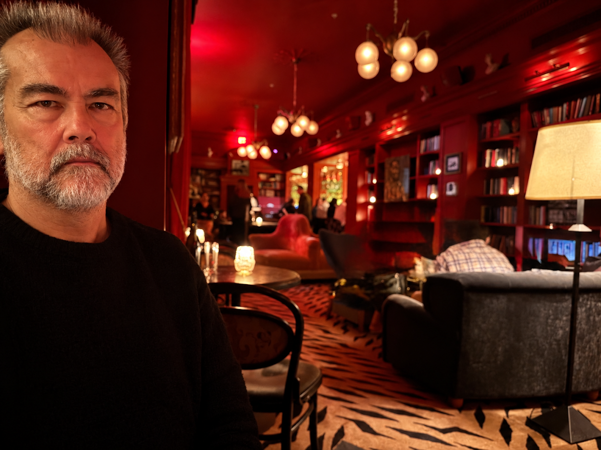

Hello Carl here, I was born and spent my younger days in Tokyo Japan.
Watching Japanese television as a child was brilliant for me as I fell in love with those amazing Japanese commercials, especially the ones with jingles.
Prior to working in film I was a Product Designer working for several watch companies, specifically, Swatch, Fossil, and practically every permutation of the Hattori Seiko group.
Working in product design is very similar to working as a Production Designer, I approach jobs as a designer. Design is problem solving, and in film every part must serve the whole while standing on its own.
I've worked in a myriad of other jobs in my youth and my young adult life, mechanic, factory worker, audio equipment assembly, recording studio maintenance, restaurant worker, engine builder, and coroner employee. All these jobs have been a part of my education.
Having lived in various countries like Japan, UK, New Zealand, and travelling for work in many cities around the world and in the US makes me very adaptable to my surroundings especially when it comes to availability of scenery and crew.
Up front communication is essential. You won't find budget issues when it's far past the due date to communicate such things. I don't treat Production like a separate entity, I work closely with Producers and Production Managers to make sure things go smoothly.
The creative is important to me, I will read the Director's treatment as I work with Directors closely to make sure their visual needs are met. I will also have studied the agency boards and figured out where shared interests lie. In long form I will have read the script and studied the characters closely.
Art Department needs to be in sync with Production and not a stand alone department. I reach out to Location Scouts, DP's, Costumers, really anybody I can to make the process of making film easy on my department as well as others.
You're only as good as the people you work with. Being fortunate to work alongside people who can accomplish amazing things taught me ego should never interfere with the work that goes in front of the camera.
I consider myself a very competent bidder. I work with many companies to give art dept bids when they are trying to land a job for their Directors as it helps me keep my pencil sharp and I can grasp the scope of a project in relation to cost vs creativity.
Hope we get to work together soon.